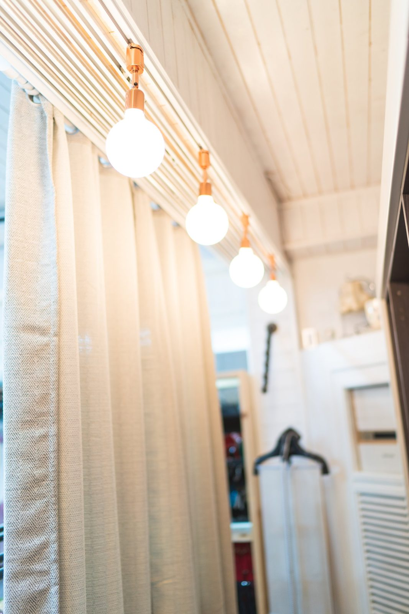
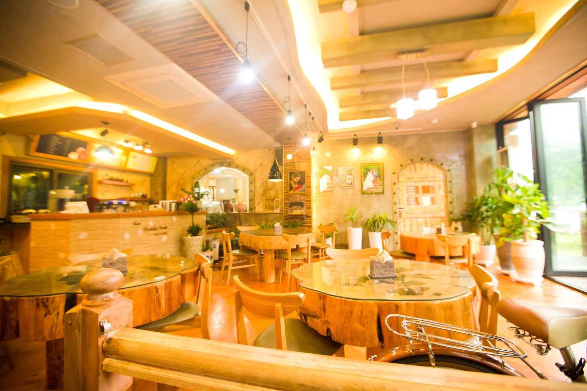

창원 가족사진, 상남동 롯데빌딩 2층 — 사랑이야기 스튜디오 창원점 오시는 길
2026-10-18 발행
창원 가족사진을 찍으러 오시는 분들이 전화에서 가장 먼저 물으시는 것이 "거기가 어디예요?"입니다. 사랑이야기 스튜디오 창원점은 경남 창원시 성산구 원이대로 652, 상남동 롯데빌딩 2층에 있습니다. 상남동 한복판이라 창원 시내는 물론 마산과 진주에서 오시는 길도 어렵지 않습니다.

창원에서 가족사진 찍으러 갈 때 차는 어디에 대면 될까요? 건물 지하 주차장에 차를 대시고 1층 로비에서 엘리베이터로 2층에 올라오시면 됩니다. 비 오는 날이나 추운 날에도 건물 안에서 다 해결되니, 어르신을 모시고 오시는 가족에게 특히 편한 동선입니다. 로비에 들어서면 큰 창으로 빛이 들어오고, 사진들이 벽에 걸려 있습니다. 그 앞에서 잠깐 기다리시는 동안 마음이 조금 풀립니다.
사랑이야기 스튜디오 창원점은 오래 카메라를 들고 있던 김작가의 작업을 2세대 창원김작가가 이어받아 운영하는 창원 상남동의 가족사진 전문 사진관입니다. 이름은 사랑이야기 스튜디오 창원점이고, 사업자 상호는 김스튜디오입니다. 150평 남짓한 이 공간에는 촬영룸, 의상실, 메이크업실, 그리고 입구의 작은 카페 김스카페가 한자리에 모여 있습니다.
촬영룸은 벽 하나와 창 하나, 소파 하나뿐인 단출한 방입니다. 일부러 비워 두었습니다. 배경이 단순해야 그 위에 가족의 표정이 남기 때문입니다.

의상실에는 드레스와 정장, 한복과 액세서리가 준비되어 있고, 가족이 같은 톤으로 입을 수 있게 맞춰 드립니다. 옷을 따로 준비하지 못하고 오셔도 괜찮습니다.

메이크업실은 촬영할 때와 똑같은 조명 아래에 있어서, 화장대 앞에서 보신 얼굴과 사진 속 얼굴이 크게 달라지지 않습니다. 촬영이 끝나면 김스카페에서 따뜻한 아메리카노 한 잔을 드시며 사진을 함께 넘겨 보실 수 있습니다. 급하게 나가실 필요는 없습니다.

액자는 촬영한 사진을 인화하고 특수 코팅으로 마감해 수입 원목액자로 직접 만들어 드립니다. 오래 걸어 두어도 색이 변하지 않도록 하는 작업입니다.
예약과 상담은 전화가 가장 빠릅니다. 창원점 대표번호는 055-287-8022이고, 영업시간은 오전 10시부터 오후 7시까지입니다. 카카오톡 채널을 친구 추가해 두시면 촬영 안내와 새 글 소식을 받아보실 수 있습니다. 네이버 지도에서 "사랑이야기스튜디오 창원점"을 검색하시면 오시는 길이 바로 나옵니다.
유튜브 채널 '사랑이야기 김작가Tv'에도 창원점에서 찍은 영상이 올라와 있습니다. 영상 한 편을 먼저 보시면 공간과 분위기를 미리 아실 수 있습니다.
자주 묻는 질문
Q. 사랑이야기 스튜디오 창원점은 어디에 있나요?
A. 경남 창원시 성산구 원이대로 652, 상남동 롯데빌딩 2층입니다. 1층 로비에서 엘리베이터를 타고 올라오시면 됩니다.
Q. 차를 가져가도 되나요? 주차는 어떻게 하나요?
A. 창원점 건물 지하 주차장을 이용하실 수 있습니다. 어르신을 모시고 오시는 경우에는 미리 전화로 말씀해 주시면 안내해 드립니다.
Q. 상담과 예약은 어떻게 하나요?
A. 전화 055-287-8022가 가장 빠릅니다. 영업시간은 오전 10시부터 오후 7시까지이고, 카카오톡 채널로도 문의하실 수 있습니다.

오시는 곳
사랑이야기창원점
- 주소 경남 창원시 성산구 원이대로 652, 상남동 롯데빌딩 2층
- 전화 055-287-8022
- 영업시간 오전 10:00 ~ 오후 7:00
- 예약 전화 상담 · 카카오톡 채널
- 주차 건물 지하 주차장
김작가사진이야기 의령
- 주소 경남 의령군 궁류면 청정로 1188
- 전화 055-574-3706
- 영업시간 오전 10:00 ~ 오후 7:00
- 예약 전화 상담 · 카카오톡 채널
- 주차 전용 주차장
이 글에 한마디
댓글창을 준비하고 있습니다. 그동안 궁금한 점은 카카오채널로 남겨 주시면 바로 답변드립니다.
카카오채널로 한마디 남기기